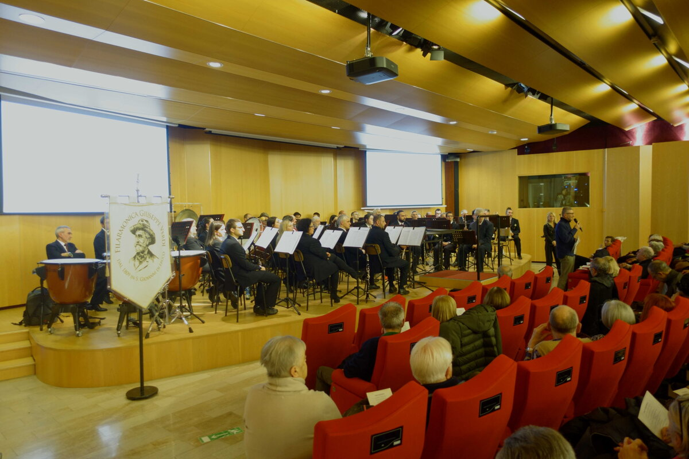

Il programma «Sogni e Visioni» ha accostato brani molto conosciuti a composizioni eseguite più raramente. Il tradizionale appuntamento della Filarmonica ha riscosso un grande successo nell’auditorium lecchese.
Il concerto diretto da Mauro Bernasconi conquista il pubblico della Casa dell’Economia.

Il programma «Sogni e Visioni» ha accostato brani molto conosciuti a composizioni eseguite più raramente. Il tradizionale appuntamento della Filarmonica ha riscosso un grande successo nell’auditorium lecchese.